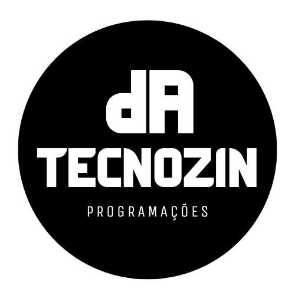

T.I
Este foi trabalho desenvolvido para a atividade final.
A PA Tecnozin é uma empresa dedicada a transformar a gestão educacional em escolas e faculdades. Seu sistema EduSync organiza informações sobre alunos, gerencia matrículas, monitora frequência e facilita a comunicação entre alunos e professores, promovendo eficiência e integração. Produzir a plataforma em Python foi desafiador, mas gratificante. Desde a criação de uma interface intuitiva até a implementação de recursos personalizados, cada etapa envolveu planejamento, testes e ajustes para oferecer uma solução prática e inovadora para a educação.
